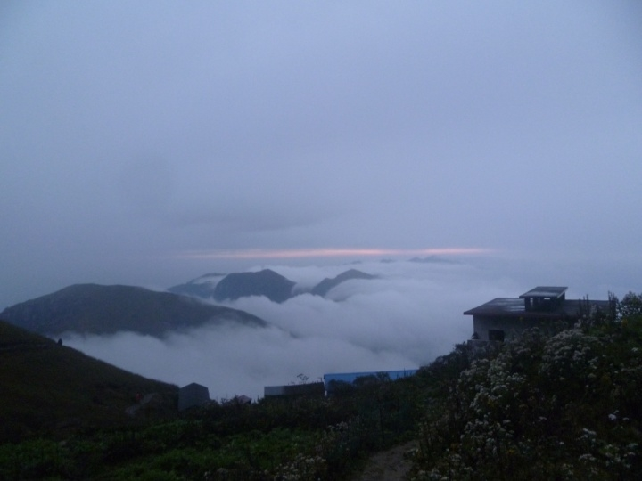

发信人: ZBug (ZBug), 信区: outdoor
标 题: 有你们的记忆，点点滴滴都值得珍惜
发信站: 饮水思源 (2014年05月23日03:50:01 星期五)
楠溪江的游记还没写，拖沓懒惰惯了，本来也就打算看看小朋友们的游记，回味一下，
也就给这次旅行做一个结。毕竟还要留在这里两年多，也就没有那么多的离愁别绪。今天
的换届会是一个转折点，刚开始也没什么，就听tankie扯扯淡，煽煽情，小朋友们讲讲自
己的雄心壮志，没引起多大波澜。最后的大合照，想起去年，前年的换届大会，然后回忆
一点点扩散开来。
当时还是跳蹦跳蹦的新生，对于户外运动什么都不知道，加入协会刚开始也是因为对攀岩
的兴趣，进来过后却没有很快融进来，然后到询问怎么参加干事，问的yzh，虽然没怎么搭
理我，一直都记得那时wh在旁边简单介绍各个部门，真的是无比感激，如果当时没有引导
，兴许现在就不在协会混了呢，有时一个无意识的小举动，真会影响一生。接下来在无数
次无存在感的跑圈中听说了阳阳，loushichao，fxy，虽然都对不上号；和翔哥拼圈，不知
你还记得不，你内圈，我外圈，跑完你说小伙儿不错啊，我有点不好意思的说外圈只比内
圈多62m(10圈)。最后就是在双杠的地方和大胸皓聊天，jyq也在场，yh说让我去参加探路
的活动，当时非常开心，可以到野外去玩玩。 第一次出去当然是非常激动啦，第一天晚
上在帐篷里面露营的时候，不知做什么梦，激动的跳起来，当时天气热没有盖被子，直接
在帐篷里面跳起来了，把hm，zzm吓尿了，把我拽醒，不停的问，zbg你怎么了！！当时非
常淡定的给他们说，没什么没什么，继续睡觉继续睡觉~~我是很快就睡着了，不知你们几
个睡的香否？第二天的石头各种好玩啊，从这踩到那儿真是开心的不得了。早早的到了营
地游泳，晒衣服晒裤子，合影，于是便有了这个== 左边抹棕油的我不认识！！不要问我！
！
screen.width - 200){this.width = screen.width - 200}">
回去后就给翔哥学做地图，让我们几个去哪些网站查地图资料，游记攻略，现在依然记得
，只是去年再去这几个网站的时候，“山路”已不复存在；“磨坊”升级了，界面更加时
尚；8264一如既往的风光。当时对做地图很痴迷，总想把一个图做好，设置各种参数，修
改各个图层的配置，让图片的效果最好。比如现在协会经常用的：航迹用蓝色，输出采样
间隔，网格间距，全国地图数据包，村庄数据包，基本是那个时候留下来的，在昱岭关的
探路报告中，关于地图制作有详细的记录；以及后来尝试用C++来整理在网上找到的gps航
迹。再后来和zzm一起参加清凉峰南山脊联合攀登，我和zzm都有党课，这课原则上不能请
假，但其实找一个人顶替上课就没事了，zzm组长比较怕事，非得让他去给上头请假，结果
一去请假，就问出还有一个同学(me)也去参加，于是我也被叫到电群办公室，“同学你也
有党课，怎么不请假呢？！”“刚收拾好东西，正要来请假==!”于是在那里磨了近一个小
时吧，谈安全，谈联合攀登意义，谈学生出去活动开眼界啊什么的，总之最后准假了，前
提是一有空就要给老师发消息报告情况。和旦旦出去感觉他们装备还不错，技术方面~~还
行吧，反正最后我zzm和财大一哥们儿帮忙押队了。手脚并用南山脊，对于喜欢爬石头的人
来说，是不容错过的，只可惜清凉峰后来封山了。（封山消息传出来，song哥赶在封山前
只身去了清凉峰。当时对song哥很敬佩啊，虽然这老东西曾骗我说是大一的==，我还信了
）
screen.width - 200){this.width = screen.width - 200}">
这里插一段12年换届，正好是yh代任会长，讲话还是那么斯文的赶脚，当时还是非常敬佩
的，总之感觉各种好。那年任技术部部长兼攀岩队队长，开始跟着攀岩啊，攀岩队
队长就是发飞信兼苦力背鞋啊有木有，那时常常来的有song哥，cai哥，icer，大姐大，以
及hzy，zzm，那会儿hm弟弟还来得不多。偶尔惊现一两个协会老古董，比如yuyang，lcc。
Lcc回来觉得小朋友们很给力，分别送我们几个一把小刀，协会老人一直都在关心着协会的
发展，一点都不假。刀现在还保留着，有次在野外差点扔垃圾袋里，还好找回来了。每次
攀完岩外边聚餐或聚在五餐。这个时候gzq，gpy，ly，lx差不多也加进来了吧。小朋友们
~~~Gpy你还记得yh深情的盯着你问：“你到底喜不喜欢啊？”么。说到这里，gzq好久不出
现啦，我和yh在楠溪江还说起你呢，还挺想念的，说好的61走起啊。

继续流水式的叙述~那么应该是武功山了吧，就这次出行回来便多了一个不雅的绰号，不过
学长们叫叫还是挺不错的，尤其是cai哥，毕竟代表一段过去。这次真是冷的sb了，还好身
体棒啊，一路刮风下雨，T恤走起啊，中途cai哥还停下来拿什么东西，磨叽了一段时间，
更是冷的不行。还好在发云界一切还好，看云山看云海，一切也都是以前没有体验过的，
虽然很累，还是爬到山顶上去拍了些照片。晚上掏出49元标配抓绒裹着睡觉，白天继续T恤
顶风顶雨上，绝望坡真是爬的傻掉了，只想一个劲往上爬，早点到顶早点解脱，一路低着
头小心的抬着步子上升，下面好陡，我不能滑坠。 在往后就是白云客栈休息了一会，非常
惬意，在那里是吃了酒酿么还是什么？现在都记不得了。。。下山的路上基本不记得了，
我背包罩掉了，但是居然出现在我前面的路上，而不是我后边，刚开始我还纳闷是谁掉了
和我一样的背包罩，后来才发现我的掉了。
 screen.width - 200){this.width = screen.width - 200}">
然后是昱岭关是么，四人小分队，一路都好运相伴，除了下火车就发现，我把大地图丢车
上了，只剩下小地图这件事。包车到村庄，好心的大叔让我们住在他们还没有装修完的屋
子里，那玩过的很开心，美中不足的是队长手被烫了一个泡，好像那次过后基本后来都带
了年糕。早上出发就走错路了，都怪我丢了大地图。第一次走了夜路，晚上不好认路，好
多地方都是凭着方向切过去，难度增加不少，穿的鞋也很不合适，进水走了一天，脚非常
疼。到9点还没扎营，而且没有一条明显的大路。无奈在一个土丘凑合搭营，吃饱喝足，惬
意的睡上一觉，早上起来，发现正确的路就在帐篷边上，还好昨天晚上没有继续乱切。世
间总是有那么多巧合，那么多惊喜在那里等着你。接下来一切顺利，下到村里，走到水泥
路边，搭车到乘车点，恰好碰上几个驾车来大明山玩的驴友，就攀谈起来，我们几个重装
昱岭关穿越，勾起他们对自己年轻的回味，有种相惜的感情吧，于是一大哥变和他的哥们
儿商量，载我们回上海，两部车的空余位置，刚好容的下我们四个人。。。。。回到上海
，感觉都有些不舍，两边也许都想留个号码什么的，但是最终都没有说出口，就说了再见
~
screen.width - 200){this.width = screen.width - 200}">
大明山冬训的队伍，好多事情，记不得了，你们补充下吧~~我是个酱油的押队，怀念大明
山的鸡汤！！！可以加汤的鸡汤！那次走了后就记得了hm的生日。
已经两点了呢，好想睡觉，但是明天是否还有这样的心情来写这些东西呢，还是在写写吧
。
差不多地大冬训到了吧，背了好几个睡袋过去。到北京去了老高家，超市购物买了个可爱
小碗，以及到滑雪场就冻硬了的苹果和鸡蛋。遇到了二狗，给她介绍了我们的绳结协会。
第一次滑雪，第一次攀冰，第一次接收雪地行走培训，第一次了解高原反应的应对等知识
，第一次吃到Lqc大厨的炸鸡翅； 冬训结束攀冰比赛不小心就拿了第二，奖品是一副羽绒
手套，在离开北京时送给gao的奶奶，作为刚到北京的款待的谢意。
地大冬训要提的另外一件事，就是认识了一位四川的帅富户外爱好者，通过他，我和hm了
解到大瓦山，那个寒假回去便开始准备爬大瓦山。正月十一，带上我的一个初中好基友，
三人一起向大瓦山进军。通过狭窄的峡谷，一路向上，走到天快黑才到一个聚集地，虽然
只有两三家人。都是几个老人留在屋里，年轻人都出去打工了，老伯邀请我们一起吃饭，
出于礼貌，我们没有接受，自己躲在小屋里吃大锅面。吃完就去找老伯和老婆婆聊聊天，
顺便问问明天的路况，和以往情况一样，他们总是说山高路险，不如下撤。然彼时年少，
只闻不到长城非好汉。当然重要的是我们是有备而来的。第二天上山开始有积雪，路上有
遇到熊掌印，有一个印里还有血红色的果子，刚开始没有仔细看，以为是滴的血，吓尿了
。途中有在白茫茫的一片山上走错路，切过路，但是最终都走向了正确的道路。一路上各
种小动物，大动物的脚印，他们应该昨晚有出来觅食吧。大雾天虽然看的不远，仍然一路
惬意走着玩着。有遇到一个小雪坡，于是三个人先后像小孩一样滑了一圈又一圈，一路欢
笑，虽然我的好基友由于鞋子不给力，冻的不行，但他是一个硬汉，只在下山骂了我好久
，说我坑他，不过他很喜欢这次徒步。走到半山腰，已是中午12点，开始吃午餐啦，吃着
吃着就开始自制“夹雪”饼干，味道？没有味道。吃完上路，却找不到游记上，航迹上，
地图上的岔路口，在那个平台处找了近一个小时，未果，估计雪太大把路封掉了。于是打
电话给之前联系好的向导问问情况，基本确定是走不了了，那么~~~拍照、拍视频，表示遗
憾云云~~下山都是盘山公路，上面都有比较深的积雪，两级路中间有像排水沟一样的小水
沟，一样是积了雪，而且还挺厚，于是。。。就没有走盘山路绕，直接滑雪屁降，向导说
下山要3个多小时，结果我们只用了1个多小时就到了。当天夜宿向导家，三人吃住共100元
。刚好碰上向导的儿子快要娶媳妇儿，还提前给我们吃了糖。第二天一早，辞谢向导，祝
福新人~~启程回成都。天气大好，回头看见未完成的达瓦上：
screen.width - 200){this.width = screen.width - 200}">
北大比赛了呢，希哥，你也好久没来攀岩了。准备比赛咱三玩的还是很开心的哈，虽然基
本每天都有训练，伤员的小腿还收到了gao的二次伤害，从此我们就不是模拟救援了，是真
救援==还有某次跑校园圈，西区一个公交站旁边突发奇想模拟救援，引来过路人各种奇怪
的目光，当时就想赶紧练完走人。到北京，派来接我们的小伙伴（@二妞）居然是路痴==，
最后还是我们开着地图把她领回北大。旅店老板娘也是非常有趣且含蓄，这边参加比赛都
是三人组，两男一女，房间也是三人间，所以大家也没觉得什么，一个队住一起就行了，
阿姨非常愤怒的说，你们这样不行的，我们当时很不解，就说我们是同学，一起参赛的，
坚持住一间，最后阿姨甩了一句“一男一女可以住一间，两男一女不可以住一间。。。。
。”我真的没听懂，咳咳。这次比赛还是取得非常喜人的成绩的，模拟救援由于动作过快
而被罚时。定向越野真是大坑啊，不过我们没有跑出地图。。。。巨人梯咱还是做的挺好
的，毕竟没有练习过，对的。闲的时候逛逛校园，吃吃小吃，买明信片寄给朋友们，晚上
去吃了传说中的西门烤翅，散步说道鬼神之类的话题，gao说如果他遇到了，他会让鬼在死
一次==(掐死？)，当时那情景，我和希哥都笑翻了，不能更逗。
screen.width - 200){this.width = screen.width - 200}">
(我们挂墙壁的那张高传一个给我？)
太白山！第一次和hyp学姐一起出线，好激动啊，希望可以搭讪啊，她会不会带着男盆友啊
，这样会不会很不方便啊。这次楠溪江的部分童鞋就纠结在这个问题上了，可惜hyp学姐提
前下车了。这次扔掉很多肉啊，lqc还是非常厉害的，至少他可以说，太白山我闭着眼睛都
可以走下来，其实他真的几乎是闭着眼睛走下来的。。。。会长大人这次也有些不在状态
，不知是不是来之前做了什么体力活，咳咳。路上么有遇到暴风雪，但天气也不算好，到
处白茫茫的一片，没有放眼远眺的爽快。 晚上在一个不知名的路边扎了营，略冷，也还凑
合。不知不觉到了大爷海，它早已“冷僵了”。在石碑上拍照留念，表示某某到此一游。
貌似在这里掉过一次贞操？@高。
screen.width - 200){this.width = screen.width - 200}">
继续向下走到索道，往下到车站，赶紧和hyp学姐合影。我们乘坐的旅游接送车上只有咱几
个，于是开始的刺激的盘山公路的车程，和高在后面像猴子一样蹦来蹦去，其实是车子高
速行驶，转弯又急，我们只用往上跳一点，就会在弯道处被甩到另一边，各种欢乐，都还
记得司机NB的操作吧；有人欢喜也有人忧啊，lqc没多久就一吐出了这几天郁结在心里/胃
里的**；车开到一半，停下来用凉水喷淋刹车片，一阵青烟冒起来~~~~当晚找了间旅店，
舒舒服服睡一觉，睡前散步拒了zzm，电桩挺结实的~
screen.width - 200){this.width = screen.width - 200}">
不完美的三尖带线、十周年、七藏沟、植物园定向、阳光大联赛攀岩、半脊峰登山队训练
。。。。。要睡觉啦，还有这次楠溪江（想起还欠协会一条要带的线），在协会的日子，
成长不少，交了不少朋友，和你们在一起的每一次活动，都是大学生活的里程碑~
--
※ 来源:·饮水思源 bbs.sjtu.edu.cn·[FROM: 59.78.43.48]
※ 修改:·ZBug 于 2014年05月23日03:52:31 修改本文·[FROM: 59.78.43.48]
|